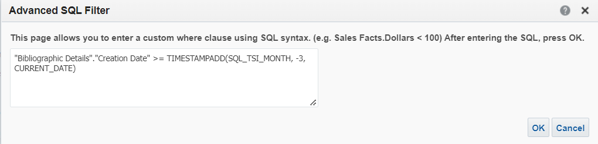
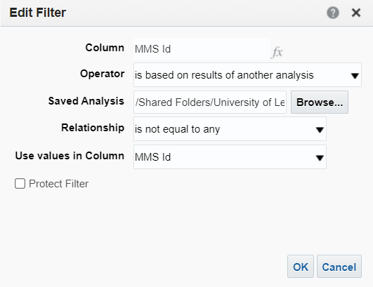
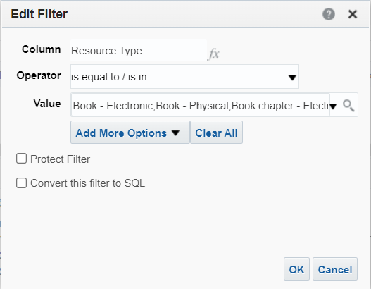
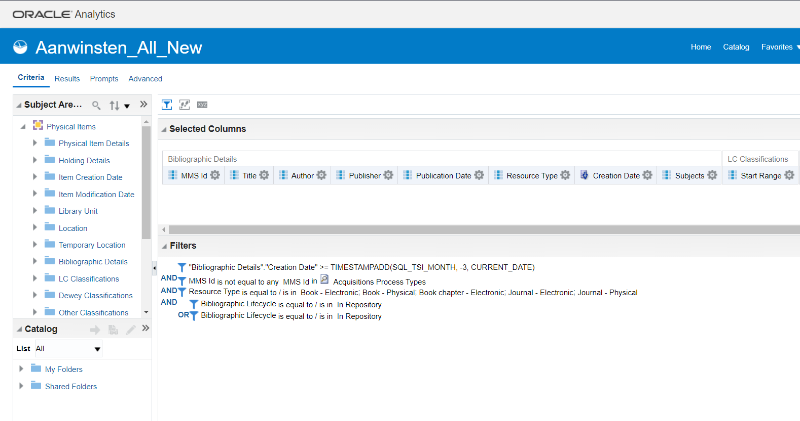
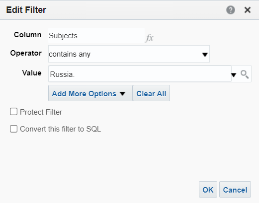

Part I - Alma Analytics
Alma Acquisitions (Open Source) requires data to be generated in Alma Analytics first. This data will then be requested via the Alma Analytics API and finally imported into the application.
graph LR
A[Alma Analytics API] --> |1. requests data from| B[Alma Analytics];
B --> |2. requests data from| C[Oracle Analytics Server]
C --> |3. sends data to| B;
B --> |4. sends data to| A;
A --> |5. finally, sends data to | D[Alma Acquisitions Open Source];Important
Before attempting to run this application and importing data, you must make sure that your Alma Analytics data configuration is properly setup.
Note
Alma Analytics refreshes its data only once a day, furthermore it is build on top of Oracle Analytics Server (OAS)1. For performance and usability reasons, this application stores and consumes data from a database, rather than relying on on-the-fly requests via the Alma Analytics API.
Creating a 'Latest Acquisitions' query in Alma Analytics
Important
Alma Acquisitions (Open Source) expects exactly the following columns. You can use other columns, but you will have to edit the views in resources\views and the JavaScript in public_html\js\datatable.js to accommodate your customizations.
In Alma Analytics, create a new 'Analysis'. In the 'Criteria' tab, add the following columns:
(Bibliographic Details)
- MMS Id
- Title
- Author
- Publisher
- Publication Date
- Resource Type
- Creation Date
- Subjects
(LC Classifications)
- Start Range
As 'Filters', add the following:
- (Advanced SQL Filter)
"Bibliographic Details"."Creation Date" >= TIMESTAMPADD(SQL_TSI_MONTH, -6, CURRENT_DATE)2
 AND MMS Id is not equal to any MMS Id in Acquisitions Process Types3
 ANDResource Type is equal to / is in Book - Electronic; Book - Physical; Book chapter - Electronic; Journal - Electronic; Journal - Physical4  AND- (Physical Items)
Bibliographic Lifecycle is equal to / is in In Repository5
OR - (E-Inventory)
Bibliographic Lifecycle is equal to / is in In Repository[^6]
Your criteria should look like this: 
Creating an acquisitions list for a specific subject in Alma Analytics
To create an acquisitions list that includes items from a specific subject, start by following the steps in the previous chapter. In the 'Criteria' tab, add a new AND to your filters and choose any filter that may fit your case. For example, if you are creating a acquisitions list for Russian Studies, you might want to add a filter like:
Subjects contains any Russia.

You can add as many filters as you need.
Tip
At Leiden University Libraries, the filters for a specific acquisitions list are defined by the Subject Specialist and implemented in Alma Analytics by one of the Alma System Managers.
-
ExLibris <2022> Introduction to Analytics and Terminology. (Accessed: 1 June 2022) ↩
-
SQL_TSI_MONTH, -6, CURRENT_DATEwill collect all the acquisitions in the previous 6 months from the current date. You can edit the amount to fit your needs. ↩ -
MMS Id is not equal to any MMS Id in Acquisitions Process Typesfilters items that are not yet available to the library users. ↩ -
Resource Type is equal to / is in Book - Electronic; Book - Physical; Book chapter - Electronic; Journal - Electronic; Journal - Physicalare the type of materials we want to show our users. ↩ -
(Physical Items)
Bibliographic Lifecycle is equal to / is in In Repositoryand (E-Inventory)Bibliographic Lifecycle is equal to / is in In Repositoryprevent displaying empty records to the end users. ↩